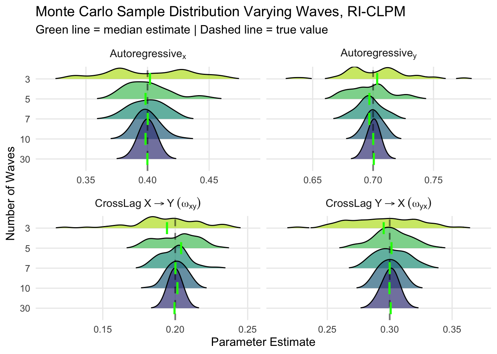

Chapter 3 Short t bias.
It is well established that estimating a dynamic fixed effects model with short t – relatively few waves – can lead to biased estimates. This is shown in Hsiao (2022). To see this, here is a dynamic panel data simulation where the DGP is an RI-CLPM with known parameters.
3.1 The Fixed Effect (Dynamic Panel) Estimator
This example simulates data from a four wave panel. Notice that the parameter estimates are far from their true values.
library(crossLagR)
library(dplyr)
library(purrr)
library(tidyr)
# Long data
baseRICLPM_sim(n = 1000,
ar_x = 0.5,
ar_y = 0.5,
cl_xy = 0.3,
cl_yx = 0.2,
waves = 4) |>
select(-contains("trait")) |>
# reshape to long
reshape_long_sim_cr() -> dat
lm(within.y ~ xlagw + ylagw, data = dat) |>
summary()##
## Call:
## lm(formula = within.y ~ xlagw + ylagw, data = dat)
##
## Residuals:
## Min 1Q Median 3Q Max
## -1.96282 -0.36166 0.00648 0.35937 1.88265
##
## Coefficients:
## Estimate Std. Error t value Pr(>|t|)
## (Intercept) 0.0005934 0.0096297 0.062 0.951
## xlagw 0.1446878 0.0184855 7.827 6.87e-15 ***
## ylagw -0.1454482 0.0184051 -7.903 3.80e-15 ***
## ---
## Signif. codes: 0 '***' 0.001 '**' 0.01 '*' 0.05 '.' 0.1 ' ' 1
##
## Residual standard error: 0.5274 on 2997 degrees of freedom
## (1000 observations deleted due to missingness)
## Multiple R-squared: 0.03394, Adjusted R-squared: 0.0333
## F-statistic: 52.65 on 2 and 2997 DF, p-value: < 2.2e-16With more waves \(t = 30\), the model recovers the true parameters.
#| echo: true
#| message: false
#| warning: false
# Long data
library(crossLagR)
library(dplyr)
library(purrr)
library(tidyr)
baseRICLPM_sim(n = 1000,
ar_x = 0.5,
ar_y = 0.5,
cl_xy = 0.3,
cl_yx = 0.2,
waves = 30) |>
select(-contains("trait")) |>
# reshape to long
reshape_long_sim_cr() -> dat
lm(within.y ~ xlagw + ylagw, data = dat) |>
summary()##
## Call:
## lm(formula = within.y ~ xlagw + ylagw, data = dat)
##
## Residuals:
## Min 1Q Median 3Q Max
## -2.71943 -0.46828 0.00234 0.46715 3.11892
##
## Coefficients:
## Estimate Std. Error t value Pr(>|t|)
## (Intercept) -0.0007708 0.0040732 -0.189 0.85
## xlagw 0.2872604 0.0056747 50.621 <2e-16 ***
## ylagw 0.4545222 0.0053462 85.018 <2e-16 ***
## ---
## Signif. codes: 0 '***' 0.001 '**' 0.01 '*' 0.05 '.' 0.1 ' ' 1
##
## Residual standard error: 0.6936 on 28997 degrees of freedom
## (1000 observations deleted due to missingness)
## Multiple R-squared: 0.4006, Adjusted R-squared: 0.4006
## F-statistic: 9690 on 2 and 28997 DF, p-value: < 2.2e-163.2 The RICLPM
The RICLPM doesn’t exhibit the same problem, with minimal bias (that decreases) with more waves. The code below runs a simple Monte Carlo analysis varying the number of panel waves, and the following fixed parameters (\(n = 2000; \beta_x = 0.4; \beta_y = 0.7; \omega_{x \rightarrow y} = 0.2; \omega_{y \rightarrow x} = 0.3\)).
library(crossLagR)
library(dplyr)
library(purrr)
library(ggplot2)
library(tidyr)
true_params <- list(beta_x = 0.4, beta_y = 0.7,
omega_xy = 0.2, omega_yx = 0.3)
extract_params <- function(fit) {
pe <- lavaan::parameterEstimates(fit)
factor_scores <- lavaan::lavPredict(fit, method = "EBM")
factor_scores_df <- as_tibble(factor_scores) %>%
select(starts_with("general_y") | starts_with("general_x"))
tibble(
beta_x = pe$est[pe$label == "beta_x"][1],
beta_y = pe$est[pe$label == "beta_y"][1],
omega_xy = pe$est[pe$label == "omega_xy"][1],
omega_yx = pe$est[pe$label == "omega_yx"][1],
)
}
results <- expand_grid(
waves = c(3, 5, 7, 10, 30),
rep = 1:50
) |>
mutate(
data = map(waves, ~{
baseRICLPM_sim(
n = 2000,
innov_var = 0.45,
ar_x = 0.4, ar_y = 0.7,
cl_xy = 0.3, cl_yx = 0.2,
waves = .x
) |>
select(-contains("trait"))
}),
# This iterates over the data, x and waves y
fit = map2(data, waves, ~{
lavaan::lavaan(estimateRICLPM(waves = ..2,
label_autoregressive = c("beta_x", "beta_y")), data = ..1,
warn = FALSE, verbose = FALSE)
}),
params = map(fit, extract_params)
) |>
unnest(params)library(ggridges)
library(dplyr)
library(tidyr)
library(ggplot2)
library(ggridges)
# Prepare data with simpler labels for parsing
results_long <- results |>
select(waves, rep, beta_x, beta_y, omega_xy, omega_yx) |>
pivot_longer(cols = c(beta_x, beta_y, omega_xy, omega_yx),
names_to = "parameter",
values_to = "estimate") |>
mutate(
parameter_label = case_when(
parameter == "beta_x" ~ "Autoregressive[x]",
parameter == "beta_y" ~ "Autoregressive[y]",
parameter == "omega_xy" ~ "CrossLag~X%->%Y~(omega[xy])",
parameter == "omega_yx" ~ "CrossLag~Y%->%X~(omega[yx])"
),
true_value = case_when(
parameter == "beta_x" ~ 0.4,
parameter == "beta_y" ~ 0.7,
parameter == "omega_xy" ~ 0.2,
parameter == "omega_yx" ~ 0.3
),
waves_factor = factor(waves, levels = c(30, 10, 7, 5, 3))
)
# Calculate medians for each wave/parameter combination
medians <- results_long |>
group_by(waves_factor, parameter_label, true_value) |>
summarise(median_est = median(estimate), .groups = "drop")
# Create plot with median lines
ggplot(results_long, aes(x = estimate, y = waves_factor)) +
geom_density_ridges(
aes(fill = waves_factor),
scale = 2,
rel_min_height = 0.01,
alpha = 0.7
) +
geom_vline(aes(xintercept = true_value),
linetype = "dashed", color = "black", size = 0.8, alpha = 0.5) +
geom_segment(data = medians,
aes(x = median_est, xend = median_est,
y = as.numeric(waves_factor) - 0.3,
yend = as.numeric(waves_factor) + 0.3),
color = "green", size = 1) +
facet_wrap(~parameter_label, scales = "free_x",
labeller = label_parsed, nrow = 2) +
scale_fill_viridis_d(option = "viridis", begin = 0.2, end = 0.9) +
labs(
title = "Monte Carlo Sample Distribution Varying Waves, RI-CLPM",
subtitle = "Green line = median estimate | Dashed line = true value",
x = "Parameter Estimate",
y = "Number of Waves"
) +
theme_minimal(base_size = 12) +
theme(
legend.position = "none",
strip.text = element_text(size = 11, face = "bold"),
panel.grid.minor = element_blank()
)## Picking joint bandwidth of 0.00646## Picking joint bandwidth of 0.00468## Picking joint bandwidth of 0.00435## Picking joint bandwidth of 0.00561
Here is a summary table,
library(gt)
bias_summary <- results |>
group_by(waves) |>
summarise(
across(c(beta_x, beta_y, omega_xy, omega_yx),
list(
mean = mean,
bias = ~mean(.) - true_params[[cur_column()]],
relative_bias = ~ (mean(.) - true_params[[cur_column()]]) / true_params[[cur_column()]]*100,
se = ~sd(.)
),
.names = "{.col}_{.fn}")
) |>
select(waves,
contains("bias")) |>
mutate(across(where(is.numeric), ~round(., 3)))
bias_summary |>
gt() |>
tab_header(
title = md("**Monte Carlo Bias Analysis**"),
subtitle = "RICLPM Estimation: Varying the Number of Waves"
) |>
cols_label(
waves = "Waves",
beta_x_bias = "Bias, AR(X)",
beta_y_bias = "Bias, AR(Y)",
beta_x_relative_bias = "Relative Bias AR(X) %",
beta_y_relative_bias = "Relative Bias AR(Y) %",
omega_xy_bias = "Bias, CL(X→Y)",
omega_yx_bias = "Bias, CL(Y→X)",
omega_xy_relative_bias = "Relative Bias, CL(X→Y) %",
omega_yx_relative_bias = "Relative Bias, CL(Y→X) %"
)|>
tab_source_note(
source_note = md("*Note*: The results reported here are from 100 simulations, varying the number of waves.")
) |>
tab_footnote(
footnote = "Bias = Mean(estimate) - True value, Relative Bias = (Bias / True value) * 100")| Monte Carlo Bias Analysis | ||||||||
| RICLPM Estimation: Varying the Number of Waves | ||||||||
| Waves | Bias, AR(X) | Relative Bias AR(X) % | Bias, AR(Y) | Relative Bias AR(Y) % | Bias, CL(X→Y) | Relative Bias, CL(X→Y) % | Bias, CL(Y→X) | Relative Bias, CL(Y→X) % |
|---|---|---|---|---|---|---|---|---|
| 3 | 0.001 | 0.287 | 0.002 | 0.318 | -0.007 | -3.282 | -0.006 | -1.876 |
| 5 | 0.000 | 0.030 | -0.003 | -0.371 | 0.001 | 0.509 | 0.002 | 0.516 |
| 7 | 0.000 | -0.075 | -0.003 | -0.445 | -0.001 | -0.512 | 0.002 | 0.516 |
| 10 | 0.000 | -0.016 | 0.001 | 0.091 | 0.001 | 0.466 | 0.000 | -0.053 |
| 30 | 0.000 | -0.038 | 0.000 | 0.049 | 0.000 | -0.038 | 0.000 | 0.087 |
| Bias = Mean(estimate) - True value, Relative Bias = (Bias / True value) * 100 | ||||||||
| Note: The results reported here are from 100 simulations, varying the number of waves. | ||||||||
3.3 Change
Below I attempt to do the same analysis but with the latent change score model with constant effects. In these simulations, I vary the degree of “between-unit” and “within-wave” variation. I didn’t have much luck here….strange results.
library(dplyr)
library(purrr)
library(tidyr)
baseRICLPM_sim(n = 1000,
ar_x = 0.4,
ar_y = 0.7,
cl_xy = 0.3,
cl_yx = 0.2,
waves = 10) |>
select(-contains("trait")) -> dat
fit = lavaan::lavaan(estimateLChange(waves = 10,
variable_type = "bivariate"),
data = dat,
warn = FALSE, verbose = FALSE)
true_params <- list(beta_x = -0.6 , beta_y = -0.3,
omega_x = 0.2, omega_y = 0.3)
extract_params <- function(fit) {
pe <- lavaan::parameterEstimates(fit)
tibble(
beta_x = pe$est[pe$label == "beta_x"][1],
beta_y = pe$est[pe$label == "beta_y"][1],
omega_x = pe$est[pe$label == "omega_x"][1],
omega_y = pe$est[pe$label == "omega_y"][1]
)
}
results <- expand_grid(
waves = c(3, 5, 10, 30),
innov_var = seq(0.25, 1.25, by = 1),
rep = 1:50
) |>
mutate(
data = pmap(list(waves = waves, innov_var = innov_var), ~{
baseRICLPM_sim(
n = 2000,
innov_var = ..2, # second arg pmap
ar_x = 0.4, ar_y = 0.7,
cl_xy = 0.3, cl_yx = 0.2,
waves = ..1 # first arg in pmap
)
}),
# This iterates over the data, x and waves y
fit = map2(data, waves, ~{
lavaan::lavaan(estimateLChange(waves = ..2,
variable_type = "bivariate",
estimate_constant_change = FALSE),
data = ..1,
warn = FALSE, verbose = FALSE)
}),
params = map(fit, extract_params)
) |>
unnest(params)
results |>
mutate(
beta_y = beta_y ,
beta_x = beta_x ) |>
group_by(waves, innov_var) |>
summarise(
across(c(beta_x, beta_y, omega_y, omega_x),
list(
mean = mean,
bias = ~mean(.) - true_params[[cur_column()]],
relative_bias = ~ (mean(.) - true_params[[cur_column()]]) / true_params[[cur_column()]]*100,
se = ~sd(.)
),
.names = "{.col}_{.fn}")) -> bias_summary3.4 Change
library(gt)
bias_summary |>
select(waves,
contains(c("mean", "waves", "innov_var"))) |>
mutate(across(where(is.numeric), ~round(., 3))) ## # A tibble: 8 × 6
## # Groups: waves [4]
## waves beta_x_mean beta_y_mean omega_y_mean omega_x_mean innov_var
## <dbl> <dbl> <dbl> <dbl> <dbl> <dbl>
## 1 3 -0.036 -0.046 0.057 0.014 0.25
## 2 3 -0.172 -0.169 0.21 0.065 1.25
## 3 5 -0.024 -0.048 0.044 -0.001 0.25
## 4 5 -0.136 -0.188 0.203 0.032 1.25
## 5 10 -0.008 -0.057 0.033 -0.016 0.25
## 6 10 -0.099 -0.194 0.187 0.003 1.25
## 7 30 0.001 -0.059 0.017 -0.025 0.25
## 8 30 -0.054 -0.182 0.154 -0.024 1.253.5 Summary
The change (LCM) and level score (CLPM; RICLPM) analysis are equivalent in the absence of unit effects. This suggests a close relationship between these models. However, when unit effects are present, the models diverge. When the DGP includes unit effects, the same interchangeable relationships disappear.